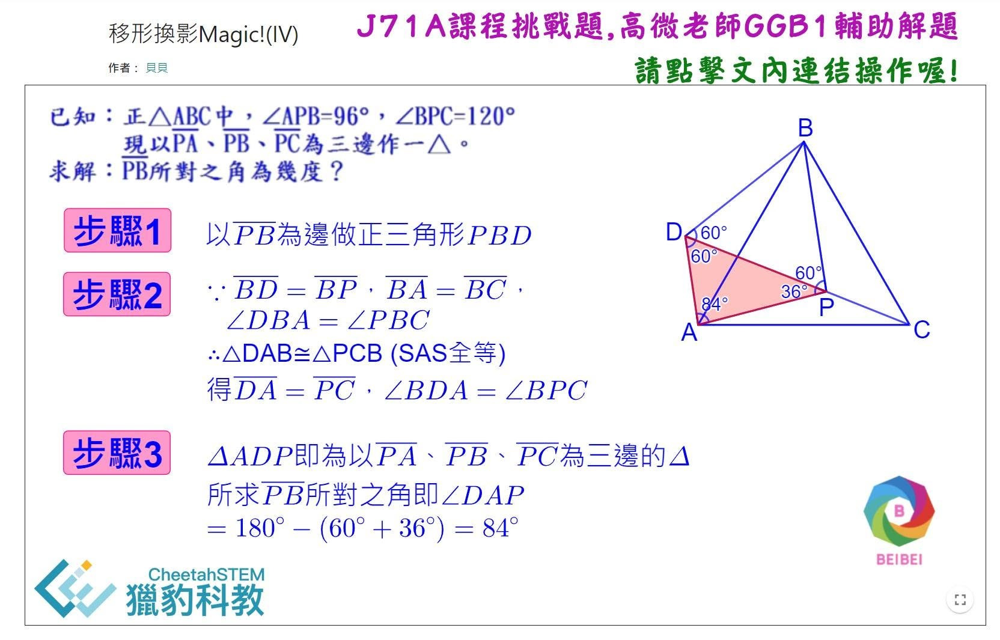

選擇比努力更重要
#直播講座
「獵豹高手的秘密武器: 數學結合程式設計GGB1, GGB3 直播講座/輕體驗」
#報名請按讚留言+1
♦ GGB1:適合三年級~五年級初學GGB學生/家長參加
授課老師：高微老師
『數學大趨勢~動態幾何和AI的結合』
12/22 (日) PM 2:30~3:30
幾何學一直是學生的痛點，那是因為沒有實際操作過動態幾何學。獵豹的學生有操作過動態幾何的經驗，在解幾何題上面都是如魚得水。
本次講座及後續課程融入了AI協助學生學習的部分讓孩子走在時代的尖端上。
歡迎參加！
---
♦ GGB3:適合五年級~七年級初學GGB學生/家長參加
授課老師：朱安強老師
『鍛鍊面積變換思維的好工具 GeoGebra』
12/21 (六) PM 4:00~5:00
三角形的面積計算看似簡單，只需“底乘以高再除以二”，但在實際考題中，往往難以一眼看出合適的底與高。這時，就需要我們對圖形進行一些變換，以便更準確地計算面積。
然而，幾何變換對於大多數人來說，卻是一個難以想象的領域。幸運的是，Geogebra這款軟件能夠幫助我們搭建起這座想象力的橋梁，讓我們的思維從靜態走向動態，從數字邁入變量的廣闊世界。
我們誠摯地邀請您於12月21日，一同來體驗Geogebra與Math帶來的數學盛宴。在這裡，您將深刻感受到數學的魅力與Geogebra的強大功能。
溫馨提醒：本次課堂將包含一些輕鬆的動手操作環節，為了確保您能獲得最佳的學習體驗，我們建議您花費30分鐘完成Geogebra賬號的註冊，並預習以下暖身任務：
任務1：註冊Geogebra 帳號 https://reurl.cc/mo3pvM
任務2 ：同底等高的三角形 https://reurl.cc/8opj4y
任務3 ：三角不等式 https://youtu.be/nHIv57ls1ew
=========
GeoGebra (縮寫為GGB) 是一款深受全球數學高手喜愛的動態數學軟體，目前已有非常多獵豹學子利用GGB來深入學習數學。
獵豹許多頂尖學子都學習了GGB。
這款軟體不僅具備其獨特的程式語言，更重要的是，它能夠結合動態圖像顯示與多功能互動操作，還能做符號運算、處理大量數據，為學習者帶來前所未有的數學體驗。
對於小學到國中的學生來說，GeoGebra 不僅是一個數學深入探究的工具，更是一個能夠激發他們創意與好奇心的平台。孩子們可以透過自己創作的動態作品，親眼看到數學概念如何在實際應用中活躍起來，這不僅增強了他們的學習成就感，更能幫助他們從另一角度重新認識與欣賞數學的魅力。
兩場GGB免費直播講座，歡迎家長和孩子們一起參加！
===
■『思維的飛躍：小學三年級的貝貝運用GGB1課程所學征服國中數學難題挑戰』
https://www.facebook.com/....../permalink/1304294460523236/v
詳見以下臉書連結：
https://www.facebook.com/share/p/159QjYmomg/
